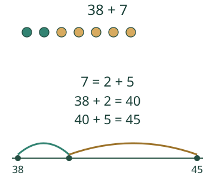
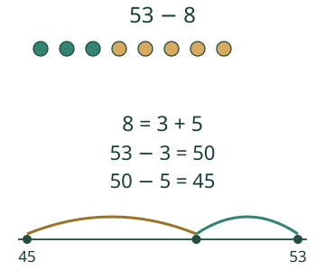
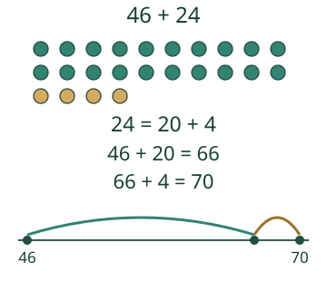

Jaa luku sopiviin osiin

Aava laskee 38 + 7. Jaa seitsemän osiin ja kokeile kahta askelta. Miten pääsisit neljäänkymmeneen?
Miksi osiin jakaminen auttaa?


Myös toinen hajotelma voi toimia
38 + 5 + 2 = 45 on oikein. Ensimmäinen välitulos on 43, joten se ei käy tasakympin kautta. Voit silti käyttää sitä, jos se auttaa sinua. Miinuksessakin 53 − 5 − 3 päätyy samaan 45:een, koska pois otetaan samat 8.

Mieti: Saako hajotelmassa tulla lisää tai kadota jotakin?
Katso perustelu
Ei. Osien on oltava yhteensä alkuperäinen luku.
Lisähaaste
Etsi laskuun 38 + 7 kolme eri hajotelmaa. Voiko jokin osa olla 0? Minkä tavan itse valitsisit ja miksi?
Katso nollaosan perustelu
Nollaosakin säilyttää luvun, mutta ei anna uutta välivaihetta.
Lopuksi: Miksi 7 = 2 + 5 käy, mutta 7 = 2 + 7 ei käy? Miten valitset itsellesi sopivat osat?
Opettajalle ja ilman ruutua
Luokat 1–2. Pakolliset M-NUM-18 ja M-PLACE-03. Tavoite on säilyttää hajotettava luku ja käyttää osia laskemisessa. Pienet +/−-askeleet avataan malleissa; ajastettua laskusujuvuutta ei oleteta eikä mitata.
Merkitse seitsemän nappia kahdeksi osaksi. Liikkukaa paperisella lukusuoralla luvusta 38 ensin toisen ja sitten toisen osan verran. Vertaile myös eri järjestystä. Käytä kymppipalikoita, kun hajotetaan 24 kahdeksi kympiksi ja neljäksi ykköseksi. Aikuinen voi lukea ohjeet, selityksen voi osoittaa.
Harjoitus pyytää molemmat osat ja lopputuloksen. Pelkkä oikea lopputulos ei osoita hajotelman rakentamista. Myös toisenlainen oikea hajotelma hyväksytään; palaute nimeää, osuuko ensimmäinen vaihe tasakymppiin. Tämä ei ole yksilöllinen tehokkuusmittaus tai formaali hallintatieto. Malli ja vihje ovat tukea, ei itsenäistä näyttöä. Ei henkilöhistoriaa tai väitettä opitun säilymisestä. Pelisilta varmistetaan verkon kuoressa.